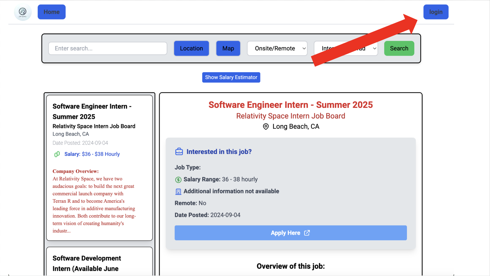
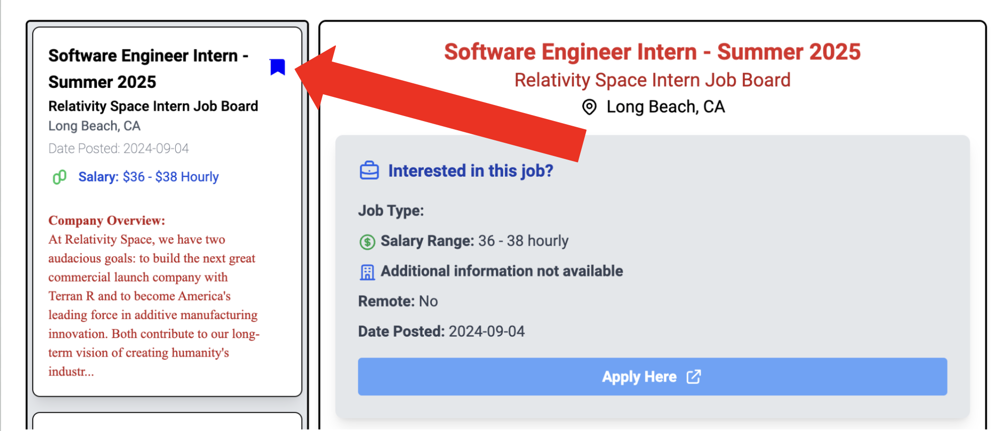
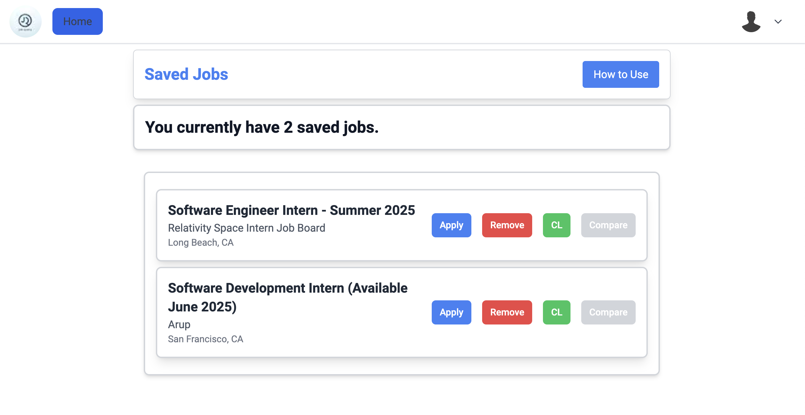
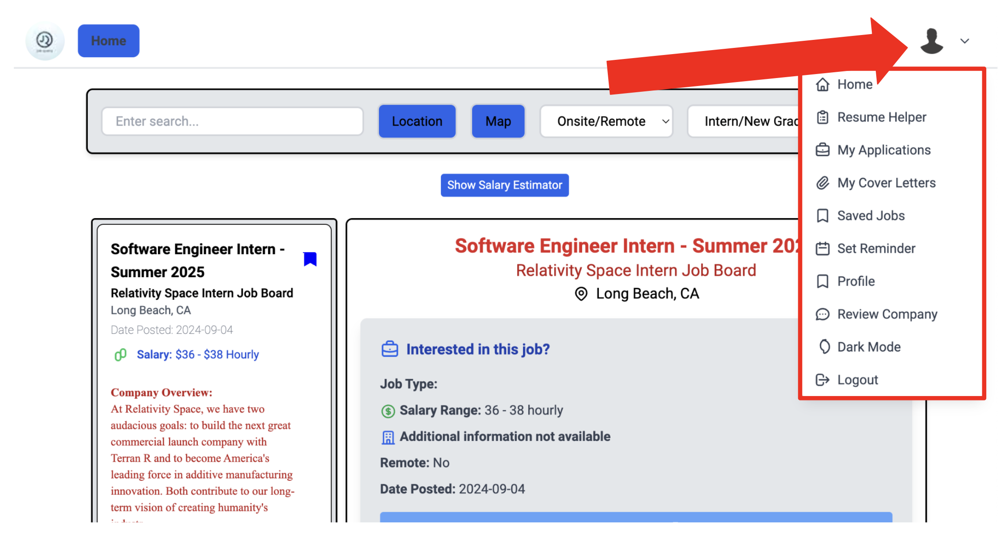

Abstract
JobQuery is designed to streamline and elevate the job search process for early career professionals. Targeting top internships and opportunities for current college students and new graduates, JobQuery specifically addresses the unique challenges faced by this demographic. Developed by a team of students who deeply understand the rigors of job hunting, JobQuery aims to transform this daunting process into a seamless and rewarding experience.
Steps for running locally:
-
Step 1: Obtaining JobQuery source code
Start by downloading or cloning our repo which can be found here.
-
Step 2: Running the backend
Our backend uses FastAPI which is built on Python. To run the backend, first ensure you have python and poetry installed. After installing these dependencies, navigate to the backend folder and create a poetry shell with
poetry shelland install all project dependencies usingpoetry install. After this, run the following command:uvicorn main:app --reloadto start the backend server. -
Step 3: Running the frontend
Our frontend uses React. First ensure you NPM installed. After installing NPM, navigate to the frontend folder and run the following command:
npm installto install all project dependencies. After this, runnpm run devto start the frontend server. After this, navigate to localhost:5173 (or use whatever port it indicates) to view the frontend.
If you do not want to run locally:
Visit our deployed version of jobquery here.
How to use JobQuery:
-
The Homepage
After visiting jobquery, you will be greeted by the homepage. Until you login there isn't much functionality offered besides being able to look through the job listings. However, after logging in you will be greeting with a variety of features that can be accessed via the Menu Bar.
-
Loggin In
To login into jobquery, press the blue "Login" button that can be see in the top right corner of the page.
After logging in, you will notice some changes to the homepage such as new access to the Menu Bar. This offers new additional features. Continue reading the tutorial to find out how to access and use each of these features.
-
Saving Jobs
While looking through the list of job listings, you may find that you want to save a job to apply to later. This can be done by clicking the "Save Flag" that is in the top right corner of every job listing in the list of jobs seen on the left side of the homepage.
A blue "Save Flag" indicates that the job is currently saved, while a clear "Save Flag" indicates that the job is not currently saved. To access all your saved jobs go to the "Saved Jobs" page via the Menu Bar. The saved jobs gives additional options (continue reading to learn what these buttons do) and looks like this:
You can easily apply a saved job by clicking "Apply" which brings you to the job's application page, or you can remove a saved job by clicking "Remove". The "CL" button and "Compare" buttons are covered in other sections of this tutorial.
-
Using the Menu Bar and Dropdown
To access features beyond what is offered by the homepage, you will need to use the dropdown menu which can be opened by clicking your profile picture in the top right corner of the page:
